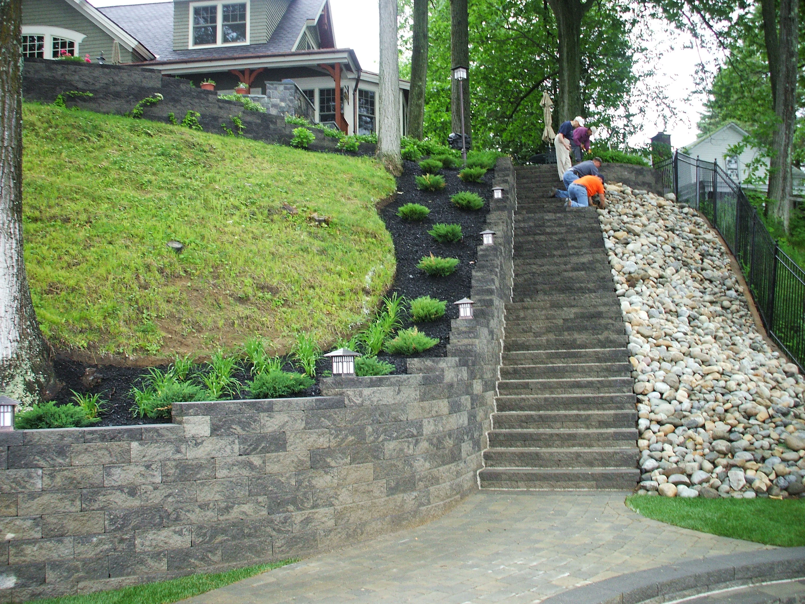
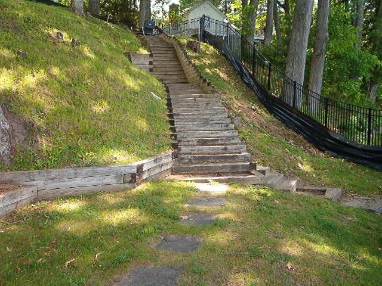

Why Homeowners Choose Us
Why Homeowners Trust BOLLMAN for Retaining Walls
Not every team offering retaining wall work is equipped to explain what failed, why it failed, and what it will take to correct it properly. At BOLLMAN, retaining walls are treated as high-skill structural work, with close attention to drainage, code, engineering, long-term stability, and the finished appearance of the property.
That matters because a wall can look acceptable from the front and still be failing behind it. We approach retaining wall projects with the same mindset we bring to the rest of our work: honest evaluation, clear recommendations, and construction that is built to perform over time — not just look finished on installation day.
Proof Points That Matter
BOLLMAN is often called in when retaining wall work has already gone wrong. The team documents defects, photographs failed installations, prepares remediation estimates and insurance claim support, and has testified on behalf of clients when competitor work failed. That experience brings a different level of clarity to both diagnosis and repair.
Licensing matters in this category for a reason. In North Carolina, general contractor classifications explicitly cover site work, grading, storm drainage, retaining walls, and excavation. For homeowners, BOLLMAN's General Contractor license is an important signal that retaining wall work is being approached with the broader site, the code requirements, and the liability of the project in mind.

BOLLMAN works with structural wall systems like VERSA-LOK because they are designed for real retaining performance, not just appearance. VERSA-LOK systems use high-strength concrete units that are dry-stacked, pinned, and installed over granular leveling pads, with geogrid reinforcement used for taller walls.

